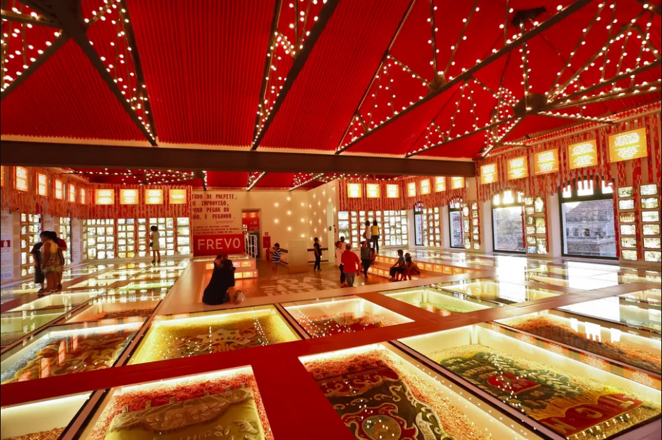
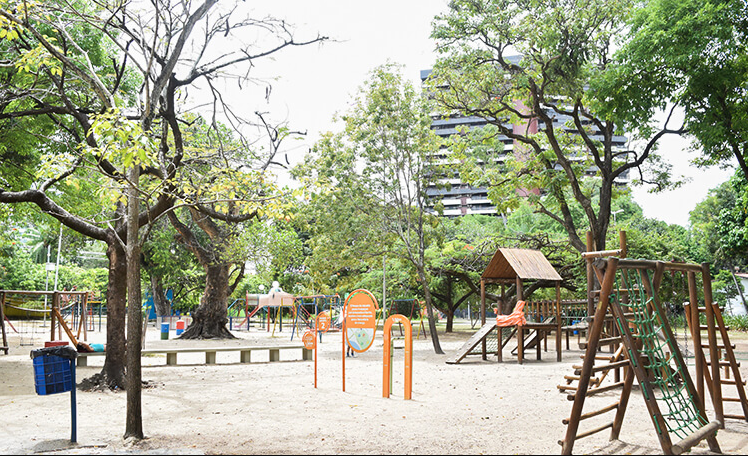
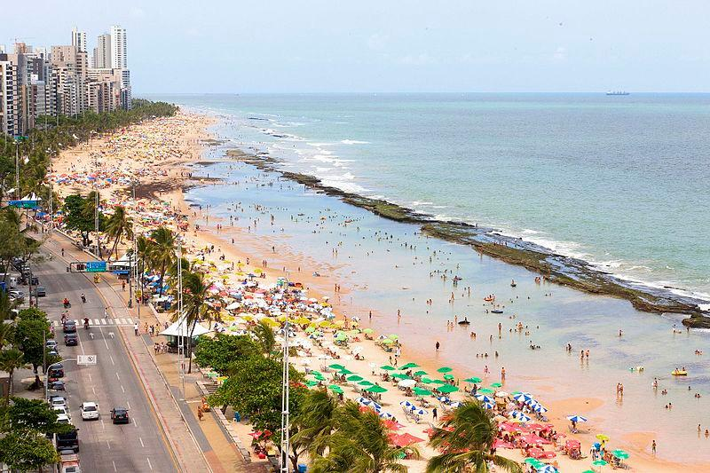

PRINCIPAIS PONTOS TURÍSTICOS DO RECIFE

-
O Paço do Frevo é um espaço cultural dedicado à difusão, pesquisa, lazer e formação nas áreas da dança e música do frevo localizado na cidade do Recife,capital de Pernambuco, Brasil.
Surgiu através de uma parceria entre a Prefeitura do Recife, a Fundação Roberto Marinho, o IPHAN e o Governo Federal
Um dos espaços voltados à cultura mais solicitados de Pernambuco ao lado de museus como o Instituto Ricardo Brennand,
o Cais do Sertão e a Oficina Cerâmica Francisco Brennand, o Paço do Frevo recebeu mais de 120 mil visitantes em seu primeiro ano de funcionamento.

-
O Parque da Jaqueira é uma área de lazer da cidade do Recife, localizado no bairro homônimo.
O parque se localiza entre a rua do Futuro e a Avenida Rui Barbosa.
É considerado o maior da cidade, porém, com a construção do Parque da Macaxeira, passará a ocupar o segundo posto.

-
A Praia de Boa Viagem é a praia urbana mais famosa da cidade do Recife, capital do estado brasileiro de Pernambuco.
Com aproximadamente oito quilômetros de extensão, está situada no bairro homônimo, Zona Sul da capital pernambucana,
delimitada pela Praia do Pina ao norte e pela Praia de Piedade ao sul.